It now has the redesigned Mac app's layout: each screen shows a thing once and leads with what you came for.
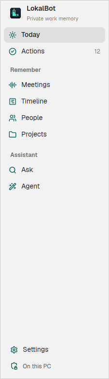
1 2 3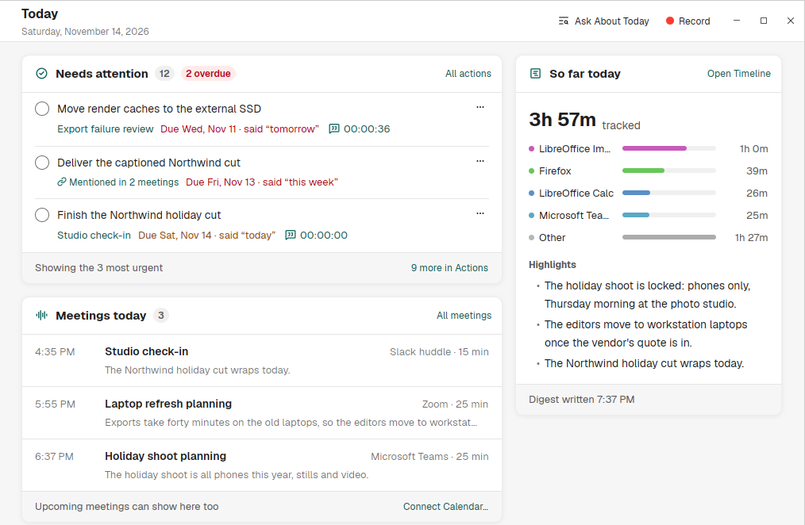
4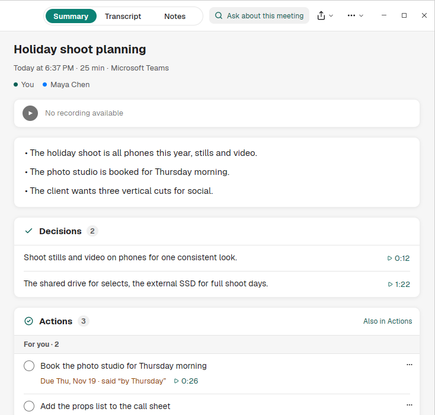
5 6 7 8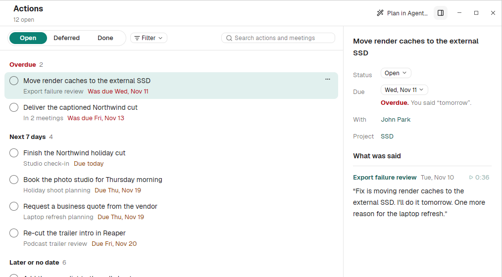
Actions: Open, Deferred, Done and one Filter menu, overdue first, details beside the list. Ctrl-click or Shift-click picks several. Plan in Agent… moved here from Today.
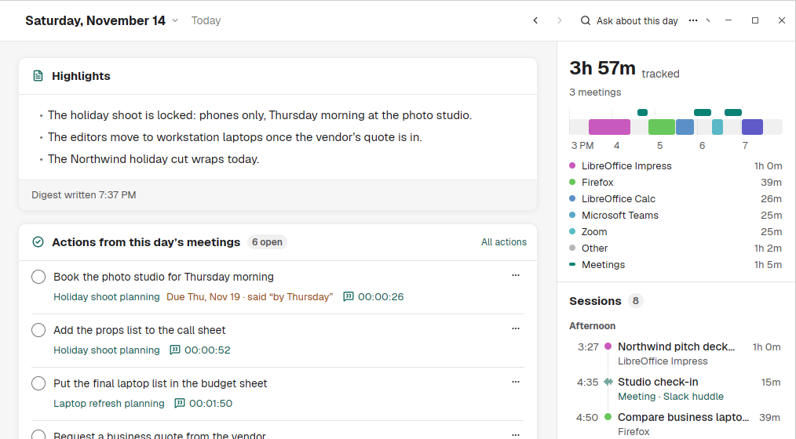
Timeline: the day's page beside a sessions rail. Drag the divider to widen the rail; it stays that width.
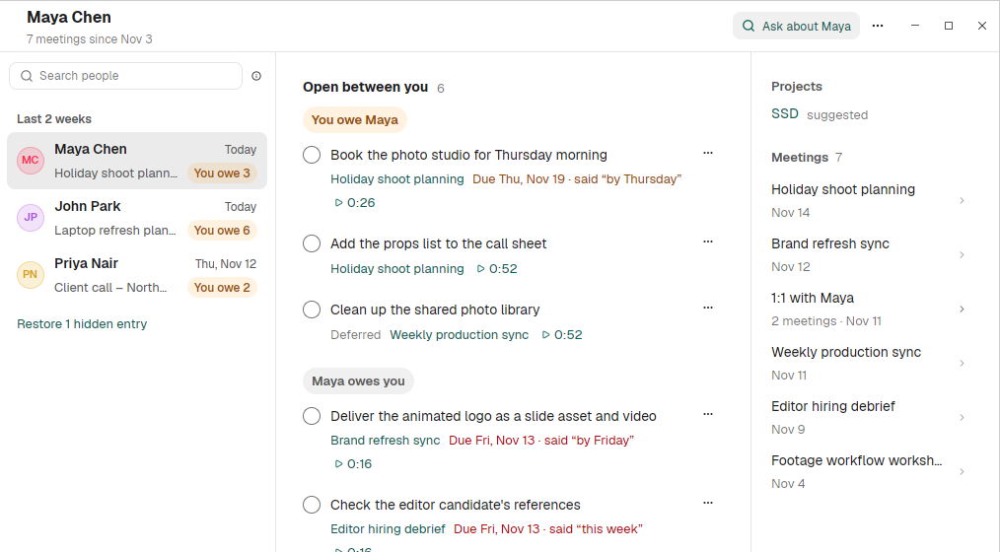
People: what's open between you, both ways. With a calendar connected, the next meeting and Prepare come first.
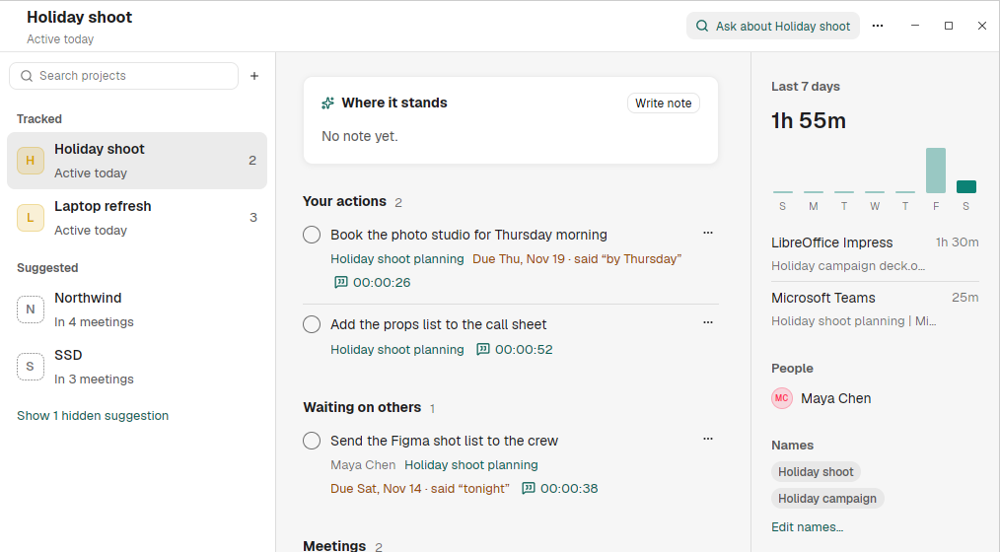
Projects: Where it stands first, then your actions and what you're waiting on, with the last 7 days beside them.
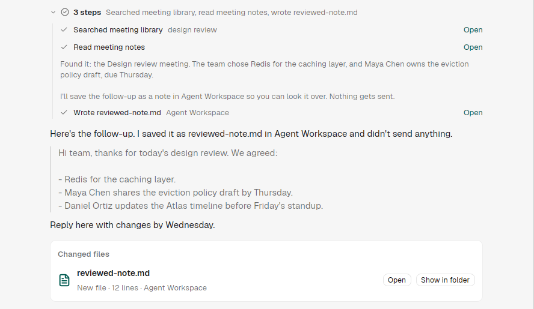
Agent: steps fold into one line, a finished task shows its answer and changed files, and an approval docks above the composer.
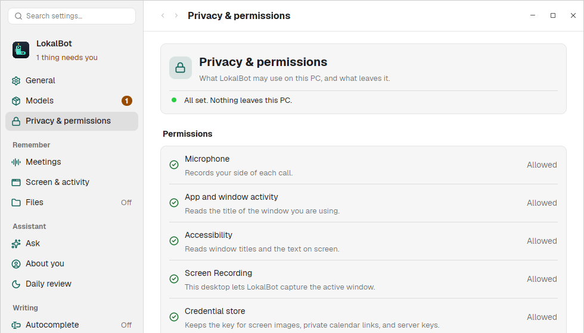
Settings (Ctrl+,): Privacy & permissions is the one home for permissions and what leaves the PC.
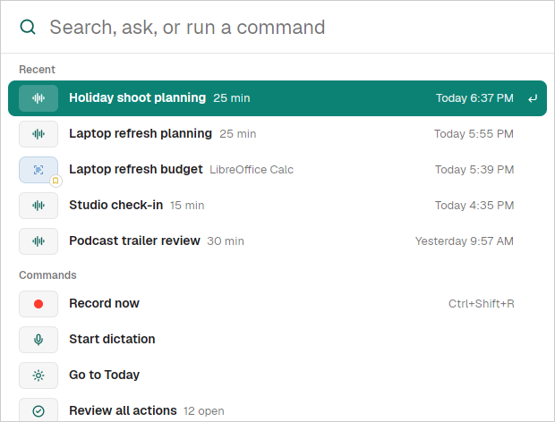
Quick Recall (Ctrl+K) replaces the command palette: search, commands and Ask in one window. Ctrl+Enter answers there with numbered sources.
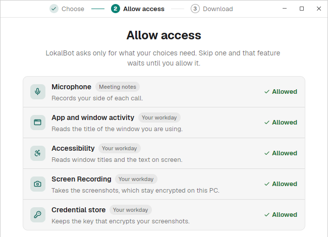
Setup has three steps. It asks only for the access your choices need and downloads nothing until you say so.
Windows and Linux remain in alpha, and the Windows app isn't code-signed yet. The screens were checked on Linux under a virtual display and by Windows CI; Wayland, KDE and GNOME desktops, the Windows tray and setup's access checks haven't been tried by hand. Wording new to Windows and Linux is machine-translated in 24 languages, not yet reviewed by native speakers. Follow-through, Hand off my actions, Live Radar and Gmail in briefs stay Mac only.